KS3: Industrialisation, Empire, and Power (1750–1900)
Unit Checklist Tracker
| Lesson Title / Exam Task |
Page |
Do Now |
Tasks |
Review |
Score |
| What powered the Industrial Revolution, and how did a Fareham ironmaster change the world? | | / 5 | 〇 | | |
| Exam Question: | | N/A | O | | |
| Was industrial work progress or punishment? | | / 5 | 〇 | | |
| Exam Question: | | N/A | O | | |
| Did industrialisation make British towns unlivable? | | / 5 | 〇 | | |
| Exam Question: | | N/A | O | | |
| How was the British Empire built and sustained? | | / 3 | 〇 | | |
| Exam Question: | | N/A | O | | |
| How did the Empire strike back? The 1857 Indian Rebellion | | / 2 | 〇 | | |
| Exam Question: | | N/A | O | | |
| How did ordinary people fight for a voice? | | / 3 | 〇 | | |
| Exam Question: | | N/A | O | | |
| How did the road to democracy expand? | | / 3 | 〇 | | |
| Exam Question: | | N/A | O | | |
| Who truly benefited from 19th-century transformation? | | / 3 | 〇 | | |
| Exam Question: | | N/A | O | | |
L1: What powered the Industrial Revolution, and how did a Fareham ironmaster change the world?
Learning Objectives
Understand the difference between the domestic system and the factory system.
Explain the significance of Henry Cort's puddling and rolling processes.
Evaluate the importance of location versus innovation in Cort's success.
Do Now Activity
Score: / 5
1. What is meant by the term 'Divine Right of Kings'?
2. Who became King after the English Civil War ended and Oliver Cromwell died?
3. Why did the Gunpowder Plot of 1605 fail?
4. What was the significance of the Magna Carta signed in 1215?
5. Why did Henry VIII break away from the Catholic Church?
Vocabulary Check
Write a short paragraph using at least FOUR of the vocabulary words below correctly.
Industrial Revolution | Pig Iron | Wrought Iron | Puddling Process | Rolling Mill
Source A: The Puddling Furnace
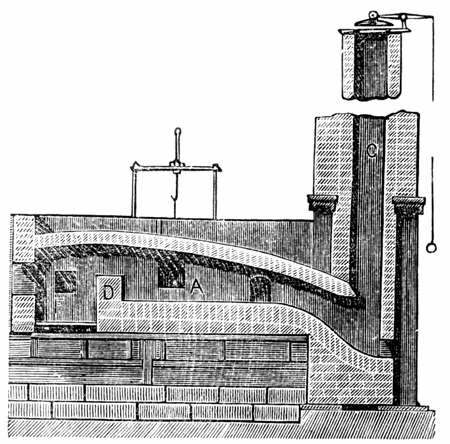
A historical cross-section diagram of a puddling furnace, the revolutionary process Henry Cort pioneered at his Funtley ironworks in Hampshire.
Hampshire Administrative Map (1832)
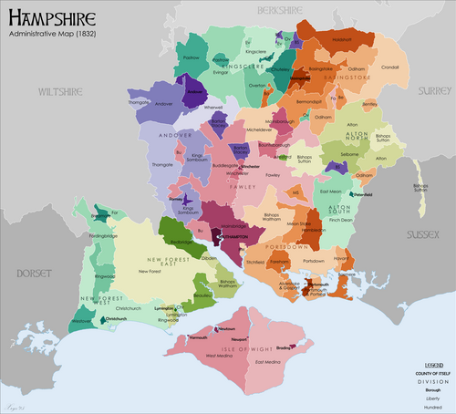
An authentic 1832 map showing the county of Hampshire.
Before the 1700s, Britain was an agricultural country. Most goods were made by hand in people's homes (the "domestic system"), and the only machines that existed were powered by natural, unreliable sources like wind, fast-flowing rivers, or the muscle power of horses. However, beneath Britain's soil lay massive reserves of
coal—a fuel that burned much hotter than wood.
In 1712, Thomas Newcomen invented the first practical steam engine, which used burning coal to pump water out of deep mines. Later, in 1769, an engineer named
James Watt drastically improved the design, making the steam engine much more efficient and powerful. Watt's steam engine changed everything: it meant that massive factories no longer needed to be built next to rivers. They could be built anywhere, powered entirely by coal and steam. This shift from farming and hand-crafting to mass factory production driven by steam power is known as the
Industrial Revolution.
However, to build these enormous new steam engines, factories, railways, and bridges, Britain desperately needed one crucial material:
iron.
Q1. Why was James Watt's improvement of the steam engine so significant for the location of factories?
In the early 1700s, British iron was of terrible quality. It was known as "pig iron"—it was brittle and snapped easily because it was full of impurities (carbon). If the Royal Navy wanted strong, flexible iron (known as "wrought iron") for its ship masts and cannons, it had to buy it from Sweden or Russia at a massive cost.
The man who solved this national crisis lived right here in Hampshire. Henry Cort was an ambitious navy agent who realized he could make a fortune if he could figure out how to mass-produce high-quality British iron. In 1775, he took over the
Funtley Ironworks (just north of Fareham) because it was ideally located to supply the massive Royal Navy dockyards in nearby Portsmouth.
At Funtley, Cort invented two revolutionary processes in 1783 and 1784:
1.
The Puddling Process: He invented a new type of furnace where molten iron was stirred (or "puddled") with long iron rods to burn off carbon impurities.
2.
The Rolling Mill: Instead of hammering the iron into shape by hand, Cort passed the red-hot iron through heavy, grooved rollers to squeeze out the last impurities and shape it into rails and bars.
Knowledge Check (Q5)
What was the primary purpose of the 'Puddling Process' invented by Cort?
- A. To hammer the iron into shape by hand.
- B. To stir molten iron and burn off carbon impurities.
- C. To make iron brittle and easy to snap.
- D. To import iron from Sweden more efficiently.
Q2. Why did Henry Cort decide to take over the Funtley Ironworks in 1775?
Q3. What two major inventions did Henry Cort patent at Funtley in the 1780s?
Q4. Study Source A. How does the physical design of the puddling furnace show that Cort was trying to solve the problem of 'pig iron' impurities?
Cort's inventions at Funtley changed the world. They allowed British iron production to multiply by 400% over the next twenty years, earning Cort the nickname "the father of the iron trade." The rails for the new train networks and the iron for the ships that built the British Empire were made using Cort's methods.
Tragically, Cort did not die a wealthy hero. His business partner, Adam Jellicoe, had secretly stolen the money used to fund the Funtley Ironworks from the Royal Navy. When Jellicoe died, the government seized Cort's patents and ruined him. Cort died bankrupt and in poverty, but his local ingenuity powered a global empire.
Q6. Why did Cort die in poverty despite his world-changing inventions?
Q7. Why were Henry Cort's inventions so vital to the growth of the British Empire?
When assessing why the Funtley Ironworks was so successful in kickstarting the Industrial Revolution's iron industry, historians debate two main factors:
1. Geographical Luck (Location): Funtley was situated just a few miles from the Portsmouth Royal Navy dockyards. In the 18th century, before the invention of trains, transporting heavy iron overland was incredibly expensive. Being located right next door to the largest industrial buyer of iron in the world (the Royal Navy) meant Cort had a massive, guaranteed market for his goods. Geography provided the economic opportunity.
2. Technological Genius (Innovation): However, location alone wasn't enough. The Royal Navy desperately needed
wrought iron (flexible and strong) for its ships and cannons, not the brittle British
pig iron that snapped easily. Without Cort's brilliant inventions—the Puddling Furnace to burn off impurities and the Rolling Mill to speed up shaping—he would have had nothing useful to sell to the Navy. Innovation provided the solution to a national crisis.
Historians must weigh these two factors to decide which was
more important to his success.
Q8. Write a structured paragraph answering the following: "To what extent was the proximity to the Portsmouth dockyards the most important factor in the success of the Funtley Ironworks?"
Q9. Chronology Challenge: Place the following in the correct causal order and write one sentence explaining how each led to the next: Watt's Steam Engine, The Domestic System, Cort's Puddling Furnace.
Building massive ironworks like Funtley and funding the broader Industrial Revolution required unimaginable amounts of capital. Modern historians emphasize that this sudden wealth was intrinsically tied to the profits of the 18th-century Transatlantic Slave Trade. Although Britain abolished the trade in 1807 and slavery itself in 1833, the industrial economy was kickstarted by the immense wealth extracted from enslaved labor on Caribbean sugar plantations, and continued to rely on slave-picked American cotton.
Writing Practice
Exam Practice
1. Describe one feature of the domestic system. (2 marks)
2. Describe one feature of Henry Cort's puddling process. (2 marks)
Documentary / General Notes
Title / Topic: ______________________________________________________________
L2: Was industrial work progress or punishment?
Learning Objectives
Understand the working conditions of the early Industrial Revolution with historical nuance.
Evaluate primary sources regarding child labour.
Analyse the 'Optimist vs. Pessimist' historical debate.
Do Now Activity
Score: / 5
1. What two major iron-making processes did Henry Cort patent at the Funtley Ironworks in the 1780s?
2. Why did Henry Cort specifically choose to locate his ironworks near Fareham?
3. What tragic event caused Henry Cort to lose his patents and die in poverty?
4. What was the primary cause of the English Civil War?
5. What was the result of the Spanish Armada in 1588?
Vocabulary Check
Write a historically accurate sentence connecting two terms from the glossary box below.
Fareham Reds | Pug Mill | Primary Source | Historiography | Factory Acts
Your Sentence:
Source A: Powerloom Weaving in 1835
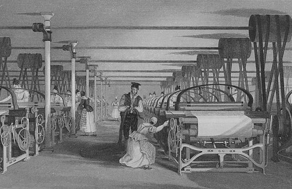
A 19th-century engraving depicting child labour in an early industrial textile mill.
Before the 1700s, most goods were manufactured by hand in people's homes, known as the 'domestic system'. It is a common myth that this was a relaxed, golden age; in reality, working at home was backbreaking, poorly paid, and children worked long hours weaving or spinning. However, the transition to the 'factory system' completely transformed the scale and danger of British life. As steam engines became more powerful, massive factories were built, causing rapid urbanisation. On a national level, this was incredible progress: Britain became the 'workshop of the world'. But for the workers, the reality was a brutal shock. The machines now dictated the pace of life. Shifts lasted 12 to 14 hours, six days a week. The noise was deafening, the air was polluted, and heavy machinery lacked safety guards, leading to horrific, unprecedented injuries.
Q1. What was the main difference between the child labour used in the 'domestic system' compared to the new 'factory system'?
Factory and mine owners actively sought out child workers. Children were cheap (paid 10% of an adult's wage), easier to discipline, and small enough to crawl under moving machinery. In 1832, Parliament sent Michael Sadler to investigate these conditions. His official report shocked the nation. One textile worker, Matthew Crabtree, was interviewed: 'I began work at eight years old... our common time was from six in the morning till half-past eight at night... we were frequently strapped [beaten] if we were too late or started to fall asleep.' The economic success of the early Industrial Revolution was largely built on the broken backs of these children.
Q2. How useful is the 1832 Sadler Report for a historian studying the reality of child labour?
The Industrial Revolution didn't just happen in northern cotton mills; it radically changed the landscape of Hampshire. As cities like London exploded in size, they desperately needed building materials. Fareham sat on a geological goldmine: deep deposits of high-quality clay. During the 19th century, the Funtley Clay Pits and Fareham Brickfields expanded massively. The unique clay produced a brilliant, vibrant red brick famously known as 'Fareham Reds'. These bricks were so highly prized by Victorian architects that they were transported by the newly built railways to construct prestigious buildings in the British Empire, including the Royal Albert Hall in London. Fareham's local mud was literally building the modern world.
Q3. Sort the following factors into the correct chronological order to explain the boom in Fareham's economy: A) Railways are built to transport heavy goods, B) London's population explodes, C) Fareham Reds are used to build the Royal Albert Hall, D) Massive demand for building materials is created.
While the Fareham Reds brought great wealth to the brickyard owners, the reality for the workers was grueling. In the Funtley brickfields, whole families worked together. Young boys and girls were employed as 'pug boys', driving the horses that turned the pug mills to crush the heavy clay. Others worked as 'carriers', lugging wet clay, or as 'turners', walking up and down long outdoor drying hacks to manually flip thousands of heavy bricks so they dried evenly. We know this wasn't just happening in the north of England; if a historian looks at the 1881 Census returns for the Fareham area, they will find numerous local children, some as young as 10, officially listed with occupations like 'brickmaker's labourer' or 'pug boy', proving the local economy relied heavily on child exploitation.
Q4. Why might a historian need to look at BOTH a national interview (like the Sadler Report) AND a local document (like the 1881 Fareham Census) to fully understand child labour?
As the 19th century progressed, the horrific human cost disgusted the public, leading Parliament to pass 'Factory Acts' to restrict child labour and mandate schooling. But historians still fiercely debate the overall impact of the Industrial Revolution. 'Pessimist' historians (like E.P. Thompson) argue that industrialisation was a catastrophe that punished the working class, destroying their traditional way of life and exploiting children for decades. Conversely, 'Optimist' historians (like R.M. Hartwell) argue that while the initial transition was harsh, it ultimately represented massive progress; it created the wealth, medical advancements, and eventual higher wages that dramatically increased the life expectancy and standard of living for everyone in the 20th century.
Q5. Write a structured paragraph answering: 'To what extent was the Industrial Revolution a punishment rather than progress for the working classes?'
Writing Practice
Exam Practice
1. Explain why child labour was so prevalent during the early Industrial Revolution. (8 marks)
Documentary / General Notes
Title / Topic: ______________________________________________________________
L3: Did industrialisation make British towns unlivable?
Learning Objectives
Analyse the contrast between imperial wealth and working-class squalor.
Evaluate the usefulness of contrasting primary sources.
Understand the catalysts for public health reform.
Do Now Activity
Score: / 5
1. What are 'Fareham Reds'?
2. Name one highly dangerous or physically demanding job a child might perform in a 19th-century textile mill or brickfield.
3. Why did factory owners actively prefer to hire children rather than adults?
4. Explain how Henry Cort's inventions at the Funtley Ironworks helped power the Industrial Revolution globally.
5. Why do 'Optimist' and 'Pessimist' historians disagree about the impact of the Industrial Revolution on working-class families?
Vocabulary Check
Write a clear definition and a historically accurate sentence for the term: Urbanisation
Visual Hook: Over London by Rail (1872)
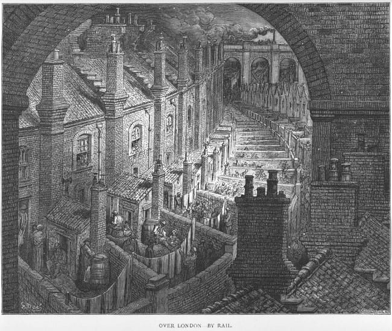
An engraving by Gustave Doré depicting the overcrowded and polluted back-to-back housing of Victorian London, published in 1872.
[[SRC_MARKER:Lundefined_Source_1]]
Source B: The Unregulated Capitalism / Corporate Perspective
"The demand for the Fareham bricks remains unprecedentedly high, owing to their great durability under heavy pressure. Contracts have been secured for the building of the vast railway arches, the expanding dockyards at Portsmouth, and prestigious public buildings in the capital. To keep pace with the building of these modern towns, the clay pits must work without interruption, and cottages for the labourers must be raised instantly adjacent to the works to secure the utmost efficiency of labour."
— Adapted from 19th-Century Southern Industrial and Brick-making Directory Records
During the 19th century, Britain's population boomed and millions flooded into cities. Construction exploded. To understand the scale of this, historians look at sources like Source B, adapted from an industrial directory for Victorian contractors (like Joseph Bull & Sons). This shows the 'façade' of the Empire: wealthy exteriors built by local Hampshire mud. But behind these glorious public buildings lay a very different reality for the working classes.
Q1. Conceptual Analysis: Based on Source B, what was the primary concern of the Victorian contractors when building 'cottages' for their workers?
[[SRC_MARKER:Lundefined_Source_2]]
Source A: The Official, Top-Down Government Data
"The charcoal-burners, the brick-makers, and the miners are all exposed to severe atmospheric changes and filth... In the town districts, the crowded back-to-back dwellings are built with no ventilation, and the refuse of the houses is thrown into open streets. The annual loss of life from filth and bad ventilation is greater than the loss from death or wounds in any wars in which the country has been engaged in modern times."
— Edwin Chadwick, Report on the Sanitary Conditions of the Labouring Population of Great Britain, 1842
To house the exploding population, landlords packed workers into tiny 'back-to-back' houses sharing three walls, offering zero ventilation. Entire families lived in a single room with no plumbing, sharing a single outdoor toilet over a deep cesspit. We know about this squalor from official investigations, such as Source A, an 1842 government report by reformer Edwin Chadwick.
Q2. Language Analysis: Look at Source A. Why do you think Edwin Chadwick chose to compare the deaths in the slums to the deaths in a 'modern war'?
[[SRC_MARKER:Lundefined_Source_3]]
Source C: The Bottom-Up, Raw Human Perspective
"We live in muck and filth. We aint got no privies, no dust bins, no drains, no water-splies, and no sewers in the whole place... We are living like pigs, and it aint fair. We hope you will print this to let the great people know how we are left to die of the cholera. We are your regular readers, and we pray you to help us."
— Letter to the Editor of The Times, signed by 54 residents of London slums, 1849
While Chadwick's report provided official statistics, historians also need the raw, human perspective to fully understand the crisis. Source C is an authentic letter sent to The Times newspaper in 1849 by 54 desperate residents of a London slum during a deadly disease outbreak.
Q3. Source Comparison: How does Source C provide a different historical perspective to Source B?
The ultimate consequence of this squalor was Cholera, a deadly waterborne disease. Initially, Victorian doctors believed in the 'Miasma Theory' (that bad smells caused disease), so they burned barrels of tar. In 1854, Dr. John Snow proved cholera was in the water. Despite this, the government maintained a 'laissez-faire' (do nothing) policy because improving sanitation was expensive. This changed during the blazing hot summer of 1858. The 'Great Stink' of raw sewage drying in the River Thames became so unbearable that politicians in Parliament had to soak their curtains in chemicals to mask the stench. The physical reality of the smell finally forced the government to abandon laissez-faire, funding engineer Joseph Bazalgette millions to build a massive underground brick sewer system.
Q4. Turning Point: Why did it take the 'Great Stink' for the government to finally abandon its 'laissez-faire' policy?
Following the construction of the sewers, Parliament passed the 1875 Public Health Act, finally forcing local councils to provide clean water and drainage. Today, historians debate the legacy of this era. 'Pessimist' historians argue that industrialisation was a catastrophe that subjected a whole generation to unlivable, deadly slums, pointing to the staggering cholera death tolls of the 1830s and 40s. Conversely, 'Optimist' historians argue that this crisis was a necessary growing pain. The rapid urbanisation forced the government to modernize and abandon laissez-faire; the immense wealth generated by the factories eventually paid for engineering marvels like Bazalgette's sewers and the laws that created the safe, sanitary cities we live in today.
Q5. Extended Writing: Write a structured paragraph answering: 'To what extent did industrialisation make British towns unlivable?'
Documentary / General Notes
Title / Topic: ______________________________________________________________
L4: How was the British Empire built and sustained?
Learning Objectives
Understand the transition of imperial rule from private mercantilism to direct state control.
Evaluate how domestic industrial complexes sustained global naval supremacy.
Deconstruct primary source provenance to determine historical utility.
Do Now Activity
Score: / 3
1. Why did Victorian builders heavily rely on 'Fareham Red' bricks during the rapid urbanisation of the 19th century?
2. How did the 1842 Chadwick Report challenge the traditional government policy of 'laissez-faire'?
3. What scientific breakthrough did Dr. John Snow achieve during the 1854 cholera outbreak in Soho?
Vocabulary Check
Write a short paragraph using at least FOUR of the vocabulary words below correctly.
Mercantilism | British Raj | Two-Power Standard | Ironclad | Captive Market | East India Company (EIC) | Sepoy Mutiny | Naval Supremacy
HMS Warrior at Portsmouth
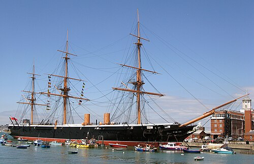
Launched in 1860, HMS Warrior was the world's first iron-hulled, steam-powered ironclad warship, representing the absolute peak of British industrial and naval supremacy.
Walter Crane's Imperial Federation Map (1886)
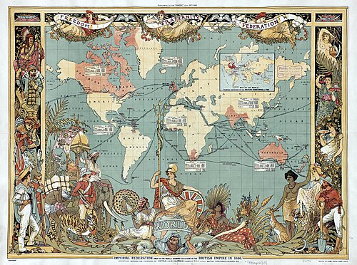
A classic high-Victorian map showing the extent of the British Empire colored in red.
The British Empire of the 19th century was the largest empire in human history, yet its grandest conquest did not begin with state military planning. Instead, it was executed by a private, profit-driven corporation: the East India Company (EIC). Founded in 1600 to control trade in precious spices, silks, indigo, and tea, the EIC transformed into an aggressive imperial powerhouse. To secure its commercial monopolies, the Company recruited its own private mercenary army, exploiting political divisions between local rulers. By systematically weaponizing its financial might, the EIC turned the Indian subcontinent into a captive market. This drove a ruthless economic cycle: India's rich fields produced raw cotton, which was shipped back to feed the brutal factories studied in Lesson 2. The finished textiles were then shipped back to Asia, flooding local markets and deliberately bankrupting India's domestic handloom weavers.
Q1. Categorise the drivers of the East India Company's expansion in India into Economic, Military, or Political factors using structured bullet points.
[[SRC_MARKER:Lundefined_Source_3]]
Source A: The Corporate Directive
"We must remind our officers that the primary purpose of our presence in India is the secure maintenance of trade. Any action by our military commanders that causes unnecessary alarm or religious outrage among the native troops risks disrupting our merchant traffic and damaging the financial returns of our shareholders in London."
— Directors of the East India Company, April 1857
Corporate greed eventually triggered total collapse. The East India Company's rule was defined by aggressive economic extraction, cultural insensitivity, and racial discrimination. In May 1857, this systemic oppression triggered the Indian Rebellion (historically known as the Sepoy Mutiny). Indian soldiers within the Company's army turned on their British officers, sparking a bloody, year-long conflict across northern India. The British state intervened to brutally crush the uprising with horrific violence, but the catastrophe permanently shattered the EIC's credibility. Parliament realized that a private trading company could no longer be trusted to govern a subcontinent safely. In 1858, the Government of India Act formally abolished the East India Company and transferred total administrative control to the British Crown, establishing the British Raj.
Q2. Analyze the motive behind the EIC directive provided in the source. How does this corporate motive impact its usefulness for a historian investigating the causes of the 1857 Rebellion?
Direct rule over distant millions required absolute control of the world's shipping lanes, a strategy known as naval supremacy. Following the Napoleonic Wars, the Royal Navy enforced the strict 'Two-Power Standard' to protect merchant networks and project imperial power. This global supremacy was physically manufactured and sustained right here in Hampshire, at the Portsmouth Dockyard. Throughout the 19th century, Portsmouth was transformed into the largest steam-powered industrial complex on earth. It was here that Britain abandoned wooden sailing ships and turned to steam-driven 'Ironclads'. These floating fortresses required massive technological synthesis: they utilized the advanced metallurgy pioneered by Henry Cort at Funtley (Lesson 1) for their armor plating, and were built using the very 'Fareham Red' bricks studied in Lesson 3 for the expanding dockyard basins. Thousands of local Hampshire tradesmen—shipwrights, smiths, and boiler-makers—worked grueling shifts to build the fleets that patrolled the world.
Q3. Explain the significance of Portsmouth Dockyard in maintaining Britain's global imperial supremacy during the 19th century.
[[SRC_MARKER:Lundefined_Source_5]]
Source B: The Riveter's Letter
"The noise inside these iron hulls is enough to break a man's spirit. We swing heavy sledgehammers for twelve hours straight in the blistering heat of the slips, breathing the black smoke of the forges. Our skin is scarred by flying scales of red-hot iron. The masters talk of the glory of the fleet, but we know every plate on this Ironclad is paid for with the sweat and broken health of Hampshire men."
— Arthur Vance, Portsmouth Dockyard Riveter, November 1861
While politicians in London championed the Navy as a glorious symbol of national pride, the reality for the industrial workforce in Hampshire was defined by exhausting toil and hazardous working conditions. The transition to iron-hulled engineering required a completely different class of hard manual labor, stripping away the traditional skills of wood craftsmen and replacing them with the raw, deafening power of the industrial forge. Historians must analyze working-class records to balance the grand strategic narratives of naval historians.
Q4. Compare the perspective of the dockyard worker in the source with the official government policy of the 'Two-Power Standard'. How does the provenance of this letter affect its reliability for a historian studying the human cost of empire?
[[SRC_MARKER:Lundefined_Source_6]]
Source C: The Weavers' Petition
"Our trade is entirely ruined. The cloth of England has flooded our markets, sold at a price we cannot compete with. For generations, our families have lived in comfort by our looms, but now our looms sit silent, and our children are reduced to starvation. We beg the government to place a duty on the clothing of England, or we shall perish utterly."
— Weavers of the Dacca District, India, 1830
To truly evaluate how the empire was sustained, historians must look beyond the dockyards of Hampshire and examine the devastating economic impact on the colonized populations. The British industrial economy required a continuous supply of cheap raw materials and an uncompetitive market to buy its factory outputs. This system altered the traditional lifestyles of millions. In India, local artisans who had spent generations producing world-class hand-woven textiles found themselves completely crushed by the aggressive influx of cheap, machine-made cotton goods produced in the industrial mills of northern England.
Q5. Synthesis Assessment (8 Marks): 'The British Empire was built and sustained by technological progress rather than violence and exploitation.' To what extent do you agree with this interpretation? Use the IDEA framework and evidence from across the unit (including Henry Cort, factory work, and Portsmouth Dockyard) to support your argument.
Documentary / General Notes
Title / Topic: ______________________________________________________________
L5: How did the Empire strike back? The 1857 Indian Rebellion
Learning Objectives
Understand the deep-rooted causes of the 1857 Indian Rebellion.
Analyse the brutal response of the British state.
Vocabulary Check
Write a historically accurate sentence connecting two terms from the glossary box below.
Sepoy | Doctrine of Lapse | British Raj | Mutiny | East India Company (EIC) | Rani Lakshmibai
Your Sentence:While ordinary people in Great Britain fought for a voice through domestic resistance like the machine-breaking Swing Riots or the peaceful gathering at Peterloo, colonial resistance abroad took on a far more violent and structural dimension. In the summer of 1857, the British Empire faced its greatest existential crisis of the nineteenth century. The Indian subcontinent, a vast landmass of diverse cultures, languages, and kingdoms, erupted in a massive, coordinated rebellion against its rulers. This was not a localized riot over winter wages, but a full-scale war for liberation executed by colonized people who actively weaponized their military training to reclaim their agency from a foreign occupier.
The spark that ignited this explosive rebellion is often attributed to a single, culturally tone-deaf military innovation: the Enfield rifle. In early 1857, rumors spread like wildfire among the sepoys—the native Indian soldiers who made up over eighty percent of the East India Company’s (EIC) military forces—that the new paper ammunition cartridges were greased with a mixture of beef and pork fat. To load the rifle, soldiers had to bite the top off the cartridge. For Hindu soldiers, who revere the cow, and Muslim soldiers, for whom the pig is strictly forbidden, this was viewed as a deliberate, malicious plot to destroy their religious purity.
However, modern historians emphasize that the cartridges were merely the catalyst; the true cause was a deep-seated, systemic resentment toward the East India Company’s decades of exploitation. Under aggressive policies like the 'Doctrine of Lapse,' the EIC had executed ruthless land grabs, annexing independent Indian kingdoms whenever a native ruler died without a direct male heir. This political greed, combined with heavy taxation on local farmers, the destruction of domestic textile industries, and an increasing wave of Christian missionary activity, convinced many Indians that the British were determined to systematically dismantle their ancient civilization, economy, and religions.
[[SRC_MARKER:Lundefined_Source_3]]
Source A: The Indian Rebel Manifesto
"It is well known to all, that in this age the people of Hindoostan, both Hindoos and Mohammedans, are being ruined under the tyranny and oppression of the infidel and treacherous English. It is therefore the bounden duty of all the wealthy people of India... to stake their lives and property for the well-being of the public."
— The Azamgarh Proclamation, issued by rebel leaders in August 1857
The outbreak of violence began in earnest on May 10, 1857, at the military outpost of Meerut. Refusing to use the contaminated cartridges, a group of sepoys mutinied, turned their weapons on their British officers, and marched directly to the historic capital of Delhi. There, they declared the elderly Mughal Emperor, Bahadur Shah Zafar, as the true leader of India, instantly transforming a localized military mutiny into a unified, national war of independence. The rebellion spread rapidly across northern and central India, led by iconic figures of resistance such as Rani Lakshmibai, the Queen of Jhansi, who famously fought on horseback to protect her kingdom from corporate annexation. For months, the British lost total control of vast territories, trapped in besieged fortresses while Indian rebels successfully asserted their political and military agency.
Q1. Source Analysis: According to Source A, how did the rebel leaders attempt to unite the diverse religious populations of India against the British?
[[SRC_MARKER:Lundefined_Source_4]]
Source B: The British Military Reprisal
"We have power of life and death in our hands, and I assure you we spare not. A very summary trial is all that takes place. The condemned are placed under a tree with a rope around their necks, standing on a carriage, and it is then pulled away."
— Extract from a private letter written by a British officer stationed in Allahabad, 1857
The British reprisal, when it finally came, was defined by an uncompromising, industrialized brutality that completely shattered any illusion of Britain as a 'civilizing' force. Fueled by sensationalized media reports of British civilian deaths, the state deployed the full might of its military apparatus to execute a campaign of mass terror. British forces marched through Indian villages, executing not just mutinous soldiers but thousands of ordinary civilians, burning entire communities to the ground. In an act of psychological warfare designed to deny victims traditional religious funerals, rebel leaders were bound to the mouths of cannons and blown apart.
Q2. Provenance Analysis: Why might a private letter from a British officer stationed in India in 1857 (Source B) be a highly reliable source for a historian studying the brutality of the British reprisal?
The immediate consequence of this catastrophic conflict was the complete destruction of the entity that had triggered it. In 1858, recognizing that a private, profit-driven corporation could no longer safely govern a subcontinent, the British Parliament passed the Government of India Act. The East India Company was formally abolished, and its vast territories were transferred directly to the British Crown, establishing the era of the British Raj. Queen Victoria was declared Empress of India, signaling to the world that while the initial rebellion had been crushed by overwhelming violence, the empire had been forced to completely restructure itself because the colonized population had dared to strike back.
Documentary / General Notes
Title / Topic: ______________________________________________________________
L6: How did ordinary people fight for a voice?
Learning Objectives
Analyse how industrialisation and agricultural change provoked violent working-class resistance.
Evaluate how the Chartist movement shifted working-class strategy toward constitutional reform.
Assess primary source utility through provenance and tone analysis.
Do Now Activity
Score: / 3
1. What private corporate entity controlled British commercial and military interests in India until its formal abolition in 1858?
2. What was the 'Two-Power Standard' followed by the British government in the 19th century?
3. How did the industrial workforce at Portsmouth Dockyard directly support British naval supremacy?
Vocabulary Check
Write a clear definition and a historically accurate sentence for the term: Franchise
The Chartist Mass Demonstration at Kennington Common, 1848
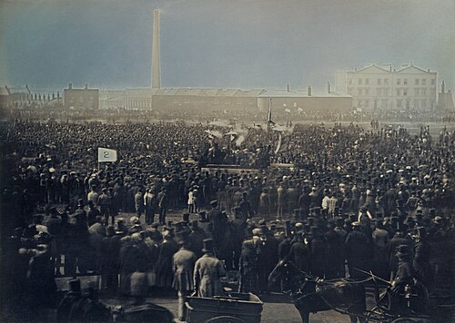
A historic photograph capturing thousands of Chartist protestors gathering in London to present their third massive petition to Parliament, demanding democratic rights.
In the decades following the industrial changes explored in this unit, ordinary working-class people possessed zero political power. Parliament was entirely controlled by wealthy landowners, and fast-growing industrial towns had no MPs to represent them. In August 1819, this political exclusion resulted in tragedy. Over 60,000 peaceful working-class men, women, and children gathered at St Peter's Field in Manchester to demand parliamentary reform and affordable food. Alarmed by the sheer size of the crowd, local magistrates panicked and ordered the cavalry to charge into the dense gathering with sabers drawn. The resulting panic left 18 dead and over 650 severely wounded. Radicals bitterly labeled the event the 'Peterloo Massacre', drawing an ironic comparison to the military victory at Waterloo. The state's violent response proved that the British establishment viewed peaceful working-class political demands as a treasonous threat to national stability.
Q1. Construct a brief chronological timeline showing the progression of working-class resistance and state response between 1819 and 1848 based on the scope of this lesson's themes.
[[SRC_MARKER:Lundefined_Source_2]]
Source A: The Threat of Captain Swing
"Sir, This is to inform you what will happen to you if you do not instantly destroy your threshing machines and raise the wages of your poor laborers to two shillings a day. We have sworn to endure this starvation no longer. If you do not break your machines yourself, we will come by night and burn them down, along with your barns and hayricks. Your injured servant, Captain Swing."
— Signed by 'Captain Swing', October 1830
While industrial cities saw mass demonstrations, the rural countryside experienced an explosion of agrarian violence. In the winter of 1830, agricultural laborers across southern England reached breaking point. Hit by successive harvest failures and winter unemployment caused by the introduction of mechanical threshing machines, families faced literal starvation. Laborers launched an automated campaign of destruction known as the 'Swing Riots', named after their mythical, pseudonymous leader 'Captain Swing'. In Hampshire, the riots were exceptionally severe. Armed bands of laborers marched through villages, setting fire to hayricks, destroying mechanical threshing machines, and demanding a minimum living wage. The state reacted with uncompromising fury to protect the property rights of the elite. Over 100 Hampshire rioters were tried at Winchester Castle; 6 men were executed, and hundreds were sentenced to penal transportation to Australia.
Q2. Analyze how the provenance and anonymous nature of the 'Captain Swing' source impact its usefulness for a historian investigating working-class grievances during the 1830 riots.
Following the Swing Riots, working-class men realized that uncoordinated property destruction resulted only in execution or exile. Instead, they began exploring a new strategy: collective bargaining through Trade Unions. By combining their numbers, workers hoped they could legally force employers to pay fair wages. However, the state remained determined to crush any form of organized working-class combination. In 1834, six agricultural laborers in the Dorset village of Tolpuddle formed a friendly society to protest a wage cut. To ensure loyalty, they swore a traditional, secret oath. Seizing on this detail, the government arrested them under an obscure 1797 law that banned unlawful secret oaths. The 'Tolpuddle Martyrs' were sentenced to seven years' transportation to Australia. The severity of the sentence provoked national outrage, triggering massive union marches in London until the government was eventually forced to grant them a full pardon.
Q3. Why did the British government use an obscure law about 'secret oaths' to convict the Tolpuddle Martyrs in 1834?
[[SRC_MARKER:Lundefined_Source_4]]
Source B: The Demands of the Chartist Leader
"We look upon the franchise [vote] as our right, and as the only tool by which we can remove our heavy economic burdens. We are starved by unjust laws; our children are worked to death in your factories; our wages are stripped by taxes. Give us the vote, and we shall send men to Parliament who will dismantle this machinery of oppression and replace it with laws of justice."
— William Lovett, Chartist Leader, May 1838
By the late 1838, working-class strategy shifted entirely from economic machinery sabotage to structural constitutional reform. Leaders realized that factory conditions, low wages, and judicial hostility would never change until working-class men sat in Parliament. This realization birthed Chartism, the first mass working-class democratic movement in British history. Launched in 1838, the movement was built around the
People's Charter, which demanded six core political changes: 1) Universal male suffrage, 2) Secret ballots to stop voter intimidation, 3) No property qualifications for MPs, 4) Salaries for MPs so poor men could run for office, 5) Equal electoral districts, and 6) Annual Parliaments. The Chartists gathered millions of signatures on three mammoth petitions, delivering them to Parliament in 1839, 1842, and 1848, threatening a national general strike if their demands were ignored.
Q4. Assume the persona of a Chartist speaker at the mass rally at Kennington Common in 1848. Deliver a brief speech explaining to your fellow workers why winning the 'People's Charter' is the only permanent solution to factory and agrarian misery.
Parliament rejected all three Chartist petitions with overwhelming contempt, deploying troops to arrest key leaders and secure major cities. On the surface, Chartism had failed, and its mass demonstrations ended after 1848 without winning a single demand immediately. However, historians view Chartism as a massive long-term catalyst for democratic progress. The movement successfully unified millions of diverse workers, establishing a permanent tradition of organized working-class resistance. Over the next eighty years, the pressure created by this political legacy forced the British establishment to slowly concede almost every Chartist demand. By 1928, five of the six points of the People's Charter had become the law of the land (with only annual Parliaments rejected), proving that the rights enjoyed in modern democracy were not gifted by the elite, but fought for by ordinary people.
Q5. Synthesis Assessment (8 Marks): 'The violent machine-breaking of the Swing Riots posed a far greater threat to the British establishment than the political campaigning of the Chartists.' To what extent do you agree with this interpretation? Use evidence from across the lesson to support your argument.
Documentary / General Notes
Title / Topic: ______________________________________________________________
L7: How did the road to democracy expand?
Learning Objectives
Understand the corruption of the unreformed electoral system.
Analyse the consequences of the 1832 Great Reform Act and the 1872 Secret Ballot Act.
Evaluate primary sources to uncover political motives.
Do Now Activity
Score: / 3
1. What was the 1819 Peterloo Massacre?
2. Name two of the six core demands made by the Chartists in the 'People's Charter'.
3. Why did agricultural laborers in Hampshire launch the violent 'Swing Riots' in 1830?
Vocabulary Check
Write a short paragraph using at least FOUR of the vocabulary words below correctly.
Rotten Borough | Pocket Borough | Franchise | Constituency | Secret Ballot | Great Reform Act 1832 | Hustings | Benjamin Disraeli
The First Secret Ballot, 1872
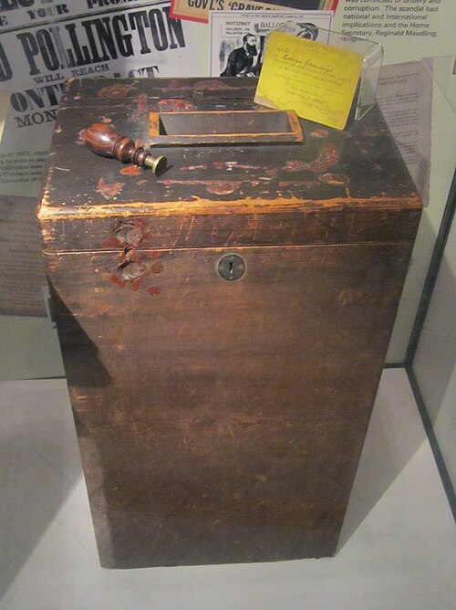
A Victorian illustration showing a man casting a vote in a newly designed private wooden booth, fundamentally changing British elections forever by removing public intimidation.
Parliamentary Representation Map of England & Wales (1832)
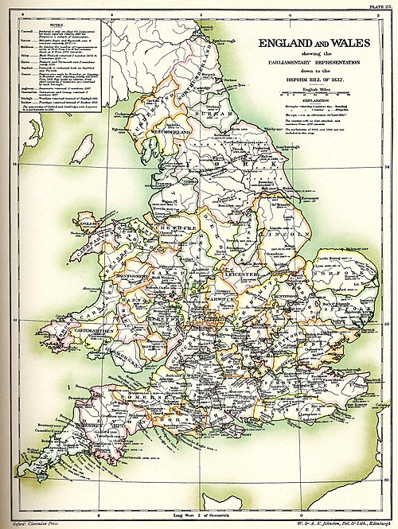
An authentic map showing the distribution of MPs before the Reform Act.
[[SRC_MARKER:Lundefined_Source_2]]
The Old Rotten Tree
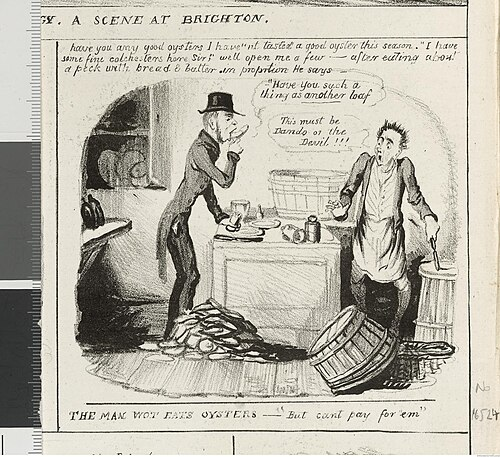
A famous political cartoon titled 'The Old Rotten Tree'. It shows a dead, decaying tree with branches labeled with the names of Rotten Boroughs (like 'Newtown' and 'Old Sarum'). Wealthy politicians sit comfortably in the dead branches like vultures, while angry reformers chop at the trunk with axes labeled 'Reform'.
Before 1832, the British electoral system was deeply corrupt and completely unrepresentative of the new industrial nation. Voting was restricted to a tiny minority of wealthy male property owners. The system of constituencies had not been updated for centuries, creating absurd inequalities. Massive new industrial cities like Manchester and Birmingham had zero Members of Parliament (MPs). Meanwhile, abandoned medieval villages—known as 'Rotten Boroughs'—still sent two MPs to Westminster. A shocking local example was Newtown on the Isle of Wight (then part of the historic county of Hampshire). By 1832, Newtown had only 14 rundown houses and barely a dozen voters, yet it possessed two MPs. Furthermore, these voters were easily bribed or intimidated by the local wealthy landowner, making it a 'Pocket Borough'—a seat in Parliament that the elite could simply buy or hand to their friends.
Q1. Source Utility: How useful is the satirical cartoon 'The Old Rotten Tree' for a historian studying the unreformed electoral system, compared to looking at an official government voting register?
Fearing a violent revolution similar to the Swing Riots and the French Revolution, the government finally passed the Great Reform Act in 1832. This was a crucial first step on the road to democracy. The Act abolished 56 of the worst Rotten Boroughs (including Newtown in Hampshire) and created new constituencies for the unrepresented industrial cities in the North. It also expanded the franchise, granting the vote to middle-class men who owned property worth £10 a year. However, the Act deliberately excluded the working classes. The wealthy elite who passed the law hoped that by giving the middle classes the vote, they would pacify the country and prevent any further democratic expansion. For the ordinary factory worker and farm laborer, 1832 felt like a bitter betrayal, sparking the rise of the Chartist movement.
Q2. Exam Practice (8 Marks): Explain two consequences of the 1832 Great Reform Act.
Even after the 1832 Act, a major tool of upper-class control remained: public voting. In the 19th century, there was no privacy at elections. Men had to stand on a public platform (the 'hustings') and shout out the name of the candidate they were voting for in front of a cheering or booing crowd. This meant that landlords, factory owners, and violent mobs knew exactly how every man voted. If a worker voted against his boss's chosen candidate, he could be fired, evicted from his home, or physically beaten. True democratic freedom was impossible under these conditions. Finally, in 1872, Parliament passed the Secret Ballot Act. It required voters to mark their choices on a printed paper inside a private wooden booth and drop it into a locked box. Almost overnight, the power of elite bribery and intimidation collapsed.
Q3. Significance Analysis: Which piece of legislation made the greatest practical difference to the political freedom of an ordinary voter: gaining the franchise in a Reform Act, or the 1872 Secret Ballot Act? Explain your reasoning.
[[SRC_MARKER:Lundefined_Source_5]]
The pressure from working-class movements like Chartism ultimately proved impossible to ignore. By the 1860s, politicians realized that expanding the vote was inevitable. In 1867, the Second Reform Act was passed, granting the vote to skilled working-class men in urban towns and cities. Later, the 1884 Third Reform Act extended this exact same right to the countryside, finally giving agricultural laborers and miners the vote. However, this expansion was not driven purely by a belief in fairness. The ruling elite deeply feared the working masses, viewing them as uneducated and dangerous. Politicians like Conservative leader Benjamin Disraeli eventually passed these reforms out of calculated political strategy; he hoped that by 'gifting' the working class the vote, they would gratefully vote for the Conservative party in return, preserving the elite's hold on power.
Q4. Read the speech by Robert Lowe (1866). Based on this source, explain the underlying fear that caused wealthy elites to resist expanding the franchise to the working classes.
By the end of the 19th century, the British political landscape had been radically transformed. The corrupt, aristocratic oligarchy that had allowed empty Hampshire fields to elect MPs had been dismantled. Due to the Reform Acts of 1832, 1867, and 1884, and the protection of the 1872 Secret Ballot, roughly 60% of adult men in Britain now had a secure, private vote. However, the road to a true democracy was far from complete. Millions of the poorest, unpropertied men were still legally excluded from voting. More glaringly, every single woman in the country, regardless of her wealth or education, was entirely barred from the political process. The fierce resistance of the 19th-century working man laid the foundation for democracy, but it set the stage for the explosive struggle of the Suffragettes in the century to come.
Q5. Synthesis Assessment: To what extent was Britain a fully functioning democracy by the end of 1884? Use evidence from across the lesson to support your judgment.
Documentary / General Notes
Title / Topic: ______________________________________________________________
L8: Who truly benefited from 19th-century transformation?
Learning Objectives
Synthesize unit-wide knowledge to evaluate historical progress versus exploitation.
Deconstruct the Optimist and Pessimist historiographical debate.
Structure a rigorous 16-mark historical essay using balanced thematic analysis.
Do Now Activity
Score: / 3
1. What was a 'Rotten Borough' in the pre-reform British electoral system, and what local Hampshire example illustrates this corruption?
2. How did the 1832 Great Reform Act deliberately attempt to stabilize elite power while expanding the franchise?
3. Why was the introduction of the 1872 Secret Ballot Act considered a devastating blow to upper-class political intimidation?
Vocabulary Check
Write a historically accurate sentence connecting two terms from the glossary box below.
Synthesis | Historiographical Debate | Façade | Oligarchy | Concession
Your Sentence:
Capital and Labour: The Two Faces of Victorian Britain
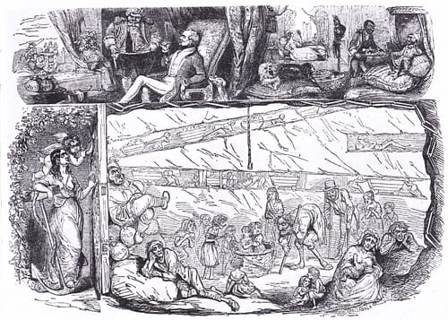
A classic 1843 satirical illustration from Punch magazine juxtaposing the extreme opulence, luxury, and technological triumph of the upper classes directly above the dark, exhausting, and impoverished reality of the working-class laborers who built that wealth.
When assessing the 19th century, 'Optimist' or traditional historians argue that this era was a period of unmatched national progress and global triumph. From this perspective, the Industrial Revolution was an economic engine that transformed Britain into the 'workshop of the world'. This progress was driven by immense local breakthroughs. Henry Cort's revolutionary puddling and rolling processes at the Funtley Ironworks (Lesson 1) allowed Britain to mass-produce cheap, high-quality wrought iron. This iron physically built the railways, factories, and the cutting-edge ironclad warships of the Royal Navy, such as HMS Warrior (Lesson 4). Simultaneously, the deep clay deposits of Hampshire fueled a massive construction boom. Firms like Joseph Bull & Sons used millions of durable 'Fareham Red' bricks (Lesson 3) to build the expanding dockyards of Portsmouth and the grand monuments of the capital, like London's Royal Albert Hall. To the Optimists, the generation of this immense industrial wealth and global naval supremacy represents a golden age that eventually lifted the standard of living for the entire nation.
Q1. Categorise the following list of historical facts into either 'Evidence of National Progress & Wealth' (The Optimist View) or 'Evidence of Working-Class / Colonial Exploitation' (The Pessimist View) by writing them under the correct headings:
1. Henry Cort's puddling process increases iron production by 400%.
2. The 1881 Fareham Census records 10-year-old boys working as 'pug boys' in clay pits.
3. Indian handloom weavers are forced into starvation by English 'captive market' trade laws.
4. Fareham Red bricks are selected to construct the Royal Albert Hall in London.
5. Edwin Chadwick records that deaths from filth and overcrowding in industrial towns outnumber casualties in modern wars.
6. HMS Warrior enforces the 'Two-Power Standard' globally, protecting merchant shipping lanes.
Conversely, 'Pessimist' or revisionist historians argue that Britain's grand imperial wealth was merely a glittering façade that masked horrific human misery. They emphasize that the working classes and colonized populations paid a devastating price for this progress. Nationally, child labor was systematically exploited in textile mills and coal mines (Lesson 2). Locally, the 1881 Census proves that young children were working 14-hour days barefoot in the freezing mud of the Funtley clay pits to manufacture those famous Fareham bricks. In towns like Portsmouth and London, workers were packed into cheap, unventilated 'back-to-back' houses where overflowing cesspits contaminated the drinking water, causing catastrophic cholera outbreaks (Lesson 3). Edwin Chadwick's 1842 report explicitly proved that the slums were deadlier than war. This misery was replicated abroad: the East India Company violently conquered India and established a 'captive market' that intentionally bankrupted local Indian weavers to enrich British mill owners (Lesson 4). To the Pessimists, this misery explains why working people were driven to desperate resistance—from the violent machine-breaking of the Hampshire Swing Riots (1830) to the massive political campaigns of the Chartists (Lesson 5).
Q2. Using the Point, Evidence, Explanation (P.E.E.) framework, write a high-quality paragraph arguing that the working classes paid the physical price for Britain's industrial and imperial progress.
The final element of the 19th-century transformation is the battle for political democracy (Lesson 6). Traditional narratives often suggest that Britain naturally and peacefully evolved into a fair democracy because its leaders valued liberty. However, critical historians argue that the expansion of the vote was a series of calculated, strategic retreats by a panicked ruling class. The wealthy elite who controlled Parliament had zero desire to share power with the working masses, whom they openly viewed as violent and ignorant. Political rights were only conceded when the elite feared that a total violent revolution was imminent. The Great Reform Act of 1832 was passed to ally the wealthy middle classes with the establishment, splitting the reform movement and leaving the working class betrayed. The Secret Ballot Act of 1872 and the expansion of the franchise in 1867 and 1884 were passed because movements like Chartism proved that the working class had developed the numbers and organizational sophistication to overthrow the state if their constitutional demands were ignored completely.
Q3. Historical Reasoning: Explain why it is historically inaccurate to argue that the British ruling class expanded the right to vote out of a belief in fairness and equality.
To successfully answer the core question of this unit, you must organize your evidence into a rigorous, balanced essay structure. Your essay must move away from simply listing facts and instead sustain a clear historical argument from start to finish. Use the following four-part structural framework to plan your response:
1.
Introduction: Define the key terms of the question, outline the 'Optimist vs. Pessimist' debate, and state your clear thesis (your main argument showing who benefited most).
2.
Thematic Paragraph 1 (The Scale of Progress): Explore the massive wealth and technological advancement generated by industrialisation and naval supremacy (e.g., Cort's iron, Fareham bricks, HMS Warrior).
3.
Thematic Paragraph 2 (The Human Cost): Contrast that wealth with the systemic exploitation and unlivable squalor suffered by the domestic working classes and colonized populations (e.g., child labor at Funtley, cholera, Indian weavers).
4.
Thematic Paragraph 3 (The Battle for Power): Analyze how political power changed, demonstrating that democracy was fought for through movements like Chartism rather than freely given.
5.
Conclusion: Summarize your main points and deliver your definitive judgment, answering
who truly benefited.
Q4. Capstone Essay (16 Marks): 'The transformation of 19th-century Britain was a triumph of progress that benefited the entire nation.' To what extent do you agree with this interpretation? Write a comprehensive, balanced synthesis essay utilizing evidence from across the entire unit.
Documentary / General Notes
Title / Topic: ______________________________________________________________
Generated: 2026-08-14 20:35:19 UTC | Unit: industrialisation_and_empire